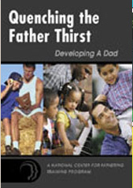
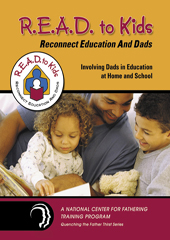
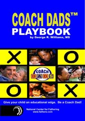
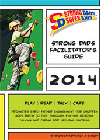
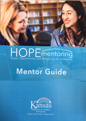
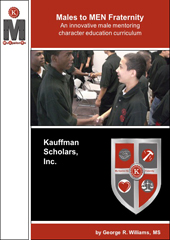

Home
Home Me
Me Work
Work Media
Media Contact
Contact
Click on the icon to download the publication.
Why Fathers Count
 |
Why Fathers Count: The Importance of Fathers and Their Involvement with Children (edited by Sean E. Brotherson and Joseph M. White) is an anthology (27 articles) dealing with the most important work men ever do - being totally involved in the lives of their children and families. I authored chapter 8 on playing with your child It is men's strengths, their capacity to care and protect and give, that are needed by children, women, and men themselves. Why Fathers Count offers insight, giving a fresh and powerful perspective on the meaningful contributions of fathers and father figures to the lives of children and families. |
Quenching the Father-Thirst
|  |
Quenching the Father Thirst: Developing a Dad is a breakthrough curriculum of the National Center for Fathering to train men to become responsible fathers/father figures that love, know and guide their children to success. I wrote this curriculum based on my experience working in a drug court diversion program and fathering court diversion program after completing my Master's in Marriage and Family Therapy. This research and theory-based curriculum is a blueprint for guided programming interventions with fathers and is designed to be useful for fathers in any social service based setting (courts, prisons, employment agencies, hospitals, drug rehabilitation centers, etc.) in any fathering situation (teen, single, married, divorced, non-custodial, step, father-figures etc.). It is a tool to transform the dysfunctional father into a functioning father and the functioning father into a higher functioning father. |
READ to Kids curriculum
|  | READ (Reconnect Education and Dads) to Kids is a research-based elementary school curriculum and program designed to improve father/father-figure involvement with their child’s education through practical fathering skills, the practice of reading, partnering with the child’s teacher and their presence at the school. The R.E.A.D. to Kids curriculum was designed with four specific attainable goals:
|
The Coach Dads curriculum
|  | Coach DADS is a fun interactive father-child program created to encourage fathers and father figures of pre-school children to get involved in their child’s learning and development through play. Coach DADS was developed by the National Center for Fathering to be integrated into the parental involvement and child development programming of local Head Start pre-school agencies. Coach DADS invites, prepares and involves fathers and father figures as “learning through play” coaches to reinforce the development of their child’s social competence, school and life readiness; socially, physically, cognitively, and representationally8 received at the preschool site and at home. |
Strong Dads, Super Kids curriculum
|  | Through the Kansas Department for Children and Families' (DCF) partnership with Kansas head start and Kansas early head start, Strong Dads encouraged fathers to improve their children’s school-readiness across what Head Start identifies as four essential domains that include language and literacy, cognitive, physical, and social-emotional development. This is accomplished by promoting father engagement in the areas of playing, reading, talking and caring for their children. I wrote the Strong Dads curriculum that focused increasing father engagement for the well-being of their children. Research shows that a father’s love is just as important as a mother’s love in terms of a child’s happiness, well-being, social and academic success, emotional stability and self-esteem. |
Hope Mentoring curriculum
|  | The Kansas Department for Children and Families’ (DCF) purpose is to protect children, promote healthy families and encourage personal responsibility. The HOPE Mentoring program assists recipients of Temporary Assistance for Needy Families (TANF) to make a voluntary connection with a Mentor who will come alongside the Mentee and encourage him/her in pursuing opportunities to grow in self-reliance. The National Mentoring Partnership (Mentor, 2006) conducted poll on mentoring, surveying formal and informal adult mentors and non-mentors. Mentors were surveyed about the challenges they faced during mentoring and responded that their experiences could have been improved and challenges overcome in a number of ways including: Having more materials/resources available Being better informed/more knowledgeable Receiving better training |
Males to MEN Fraternity curriculum
|  | The Males to Men Fraternity (M2M) program helps the male students win in education and life. M2M Fraternity supplements the Kauffman Scholar’s comprehensive programming by bringing in male facilitators to intentionally help re-educate and re-socialize these males in the knowledge, values and skills around becoming a mature man to position them for winning success in their education and personal life (Mincy, 2006). Additionally, M2M Fraternity works with academic coaches, life coaches and parents, particularly fathers and father-figures to learn ways they can bring additional support to the students (McClanahan, 2003). M2M Fraternity begins with a twelve (12)-unit curriculum that can be completed in four (4) sessions. The curriculum is based on four universal values of respect, responsibility, relationships and rightness (Williams, 2006) and integrates the topics of education, manhood, and life skills (Josephson, 2002). At the completion of the twelve (12) units the males are brought into the M2M Fraternity that meet once a month for on-going support and service including recruiting and future mentoring elementary age male students in similar curriculum topics to set them on course to win through college (Tindale, et. al., 1998). |

Here are a couple video clips of news stories about work I have done along with a humorous song I wrote while working with fathers in the Child Support court.
International Fatherhood Conference
This is a video clip of the International Fatherhood Conference in Kansas City, MO. I was a keynote presenter titled "Fathering from Trauma to Drama to a Little Bit Calmer".
Kansas Strong Dads News Story
This is a video clip of the Kansas Strong Dads Summit on KWCH in Wichita. The video features a program I developed for early healthy father engagement that according to the research literature assist in a child's overall development and well-being.
Teen Dads New Story
This is a video clip of My Teen TV on KSMO in Kansas City. It features a Teen Dads program I developed that was part of Truman Medical Center's Start Right Teen Moms program.
Baby Momma Drama Blues Song
Sharing a song I wrote while working with men in a child support diversion program. This was during a Juneteenth celebration luncheon.

Williams, G.R. (2010). The Role of Fathers in Family and Prevention. Prevention Summit 2010, Yakima, WA, October.
Williams, G.R. (2010). Best Man Best Dad. United States Penitentiary Life Connections Program, Leavenworth, KS, August.
Williams, G.R. (2010). Engaging Fathers. Strengthening the Family and Fatherhood Summit. Metro Development Council and Administration of Children and Families, Seattle, WA, March.
Williams, G.R. (2009). Black father involvement: A model for research and practice. Poster presentation at the National Council on Family Relations, San Francisco, CA, November.
Leohr, M., & Williams, G.R. (2009). Educate your mind without losing it: Coping with the eco-demands of a Ph.D. Student. Poster presentation at the National Council on Family Relations, San Francisco, CA, November.
Williams, G.R. (2008). Why bring dad into the picture. Presented at the Maternal and Child Health Conference, Fort Walton, FL, October.
Williams, G.R. (2007). Giving judges another option: Fathering court. Presented at the International Fatherhood Conference, Atlanta, GA, July.
Williams, G.R. (2006). Dad out of the box. Presented at the Annual Hawaii Fatherhood Conference, Honolulu, April.
Williams, G.R. (2006). Dads as coaches. Presented at the National Association of Basketball Coaches, Indianapolis, IN, March.
Williams, G.R., Nichols, R., Johnson, A., & Mabion, R. (2005). Manhood, Husbandhood and Fatherhood. Presented for the National Football League, Kansas City Chiefs, Kansas City, September.
Williams, G.R. (2005). Working with African American dads in challenging situations. Presented at the African America Forum on Child Support, Washington DC, September.
Williams, G.R. & El-Scari, M. (2004) Dads coaching their children through play. Presented at the National Head Start Institute on Father Involvement Conference, Dallas, TX, June.
Williams, G.R. (2001). From deadbeat to dead-broke dads. Presented at the National Welfare Reform Conference, Washington, D.C., August.
Williams, G.R. (2002). Father absence and child abuse. Presented at the Governor’s Conference on Child Abuse and Neglect, Topeka, KS, September. Williams, G.R. (2002). Helping the urban father. Presented at the National Fatherhood Summit, San Antonio, TX, July.
Williams, G.R. (2001). The fatherhood solution to incarceration. Presented at the Annual Fathers Behind Bars Conference, Saint Louis, MO, October.
Williams, G.R. (2000). Introducing the Urban Father-Child Partnership. Presented at the Family Support America Conference, Chicago, IL, September.
Williams, G.R. (1999). R.E.A.D. (Reconnecting Education and Dads) to Kids, the National PTA Conference, Chicago, IL, September.